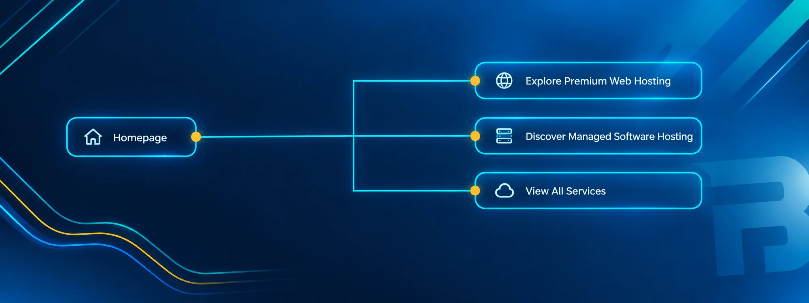

Clarifying how a software business presents what it sells.

The situation
Liberu's website presented managed software services and premium web hosting, but the relationship between the brand, the hosting plans, the managed software, the applications and the support experience wasn't clear to a visitor. Newer hosting packages had been added without a deliberate structure, and the site read more like a static information repository than a considered service experience.
Analysis & approach
Rather than treating the homepage as an isolated design problem, the review looked at the relationship between the brand, the hosting plans, the managed software, the applications, the support experience and the educational content. The work covered:
- Information architecture and the presentation of the website.
- Hosting packages, Personal, Professional, Business and WordPress propositions, and how clearly they were positioned.
- Product descriptions and the clarity of application positioning.
- Visual hierarchy, transitions, imagery and video.
- Customer-facing navigation and support-related journeys.
Information architecture
Three clearer pathways from the homepage

The documented direction: three named pathways replacing an undifferentiated information layout, so visitors land on the service they actually need.
My contribution
The work contributed:
- A clearer relationship between the brand presentation and the services being sold.
- A more deliberate approach to UX, rather than treating the site as a static information repository.
- A product-level critique of the hosting packages and their positioning.
- A practical framework for making the company more human, educational and engaging online, including repurposing knowledge-base material into an educational hub and strengthening the team/personal connection through a staff section.
Documented changes
The source document records a move from the earlier "Liberu Limited Ltd" presentation toward "Liberu, Premium Web Hosting & Services", with clearer homepage pathways such as "Explore Premium Web Hosting", "Discover Managed Software Hosting" and "View All Services", alongside stronger service descriptions and calls to action. These are documented changes/direction from the project, not independently measured outcomes.
Outcomes & limitations
The evaluation provided a structured assessment of Liberu's website, service presentation and customer journey, identifying opportunities to make its hosting packages, software services and support resources easier to understand and navigate. Recommendations focused on clearer service pathways, stronger product communication and a more consistent presentation of the business, helping establish practical priorities for improving the overall customer experience.
Since the evaluation, Liberu's public-facing proposition has developed to showcase a broader software portfolio alongside its hosting and managed services. This provides a useful example of how digital services and business positioning can evolve over time. While the later changes cannot all be attributed directly to the evaluation, the project demonstrates my approach to identifying friction, analysing service structures and translating findings into actionable recommendations.
What this demonstrates
Looking beyond a single page to understand how a brand, its products and its customer journeys fit together, then translating that into clearer information architecture, product positioning and UX direction. That is digital and service analysis applied to a real business.
Capabilities involved
Is your digital offer clearer to you than to your customers?
That gap is usually an information-architecture and positioning problem, and it's solvable.
Or go straight to the source
- harley@bradfordindependent.com
- I'll get back to you within a day.